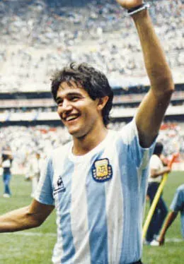

The profile
Jorge Burruchaga
Jorge Burruchaga was born in Gualeguay, Argentina, and played in the youth ranks of River Plate before reaching senior football at Arsenal de Sarandí. He later made his name at Independiente.
He won major club honours with Independiente and later played in France for Nantes. An energetic attacking midfielder, he timed runs beyond a centre-forward and worked back to help his own midfield. His movement gave Argentina another route to goal beside Diego Maradona's dribbling.
Burruchaga supplied the winning finish in the 1986 World Cup final. West Germany had recovered from 2–0 down, but he ran onto Maradona's pass and scored to make it 3–2 for Argentina. That goal completed a campaign in which his off-ball work and willingness to attack open space helped balance a team built around its captain.
1986Mexico
Champion
Group A Argentina3 : 1South Korea
- Jorge VALDANO6′
- Oscar RUGGERI18′
- Jorge VALDANO46′
- PARK Chang Sun73′
Argentinahome
Starting lineup
- Nery PUMPIDO
- Jose BROWN
- Nestor CLAUSEN
- Oscar GARRE
- Oscar RUGGERI
- Sergio BATISTA
- Jorge BURRUCHAGA
- Diego MARADONA
- Ricardo GIUSTI
- Jorge VALDANO
- Pedro PASCULLI
Substitutions
- 74′Carlos TAPIA on · Pedro PASCULLI off
- 75′Julio OLARTICOECHEA on · Sergio BATISTA off
South Koreaaway
Starting lineup
- OH Yun Kyo
- PARK Kyunghoon
- CHUNG Yong Hwan
- KIM Pyung Seok
- CHO Min Kook
- CHOI Soon Ho
- HUH Jungmoo
- PARK Chang Sun
- CHA Bum Kun
- KIM Joo Sung
- KIM Young Se
Substitutions
- 23′CHO Kwang Rae on · KIM Pyung Seok off
- 45+1′BYUN Byung Joo on · KIM Young Se off
Group A Argentina1 : 1Italy
- Diego MARADONA34′
- Alessandro ALTOBELLI6′ · pen.
Argentinahome
Starting lineup
- Nery PUMPIDO
- Jose BROWN
- Jose CUCIUFFO
- Oscar GARRE
- Oscar RUGGERI
- Sergio BATISTA
- Claudio BORGHI
- Jorge BURRUCHAGA
- Diego MARADONA
- Ricardo GIUSTI
- Jorge VALDANO
Substitutions
- 59′Julio OLARTICOECHEA on · Sergio BATISTA off
- 74′Hector ENRIQUE on · Claudio BORGHI off
Italyaway
Starting lineup
- Giovanni GALLI
- Giuseppe BERGOMI
- Antonio CABRINI
- Gaetano SCIREA
- Pietro VIERCHOWOD
- Salvatore BAGNI
- Fernando DE NAPOLI
- Antonio DI GENNARO
- Bruno CONTI
- Alessandro ALTOBELLI
- Giuseppe GALDERISI
Substitutions
- 65′Gianluca VIALLI on · Bruno CONTI off
- 87′Giuseppe BARESI on · Fernando DE NAPOLI off
Group A Argentina2 : 0Bulgaria
- Jorge VALDANO3′
- Jorge BURRUCHAGA76′
Argentinahome
Starting lineup
- Nery PUMPIDO
- Jose BROWN
- Jose CUCIUFFO
- Oscar GARRE
- Oscar RUGGERI
- Sergio BATISTA
- Claudio BORGHI
- Jorge BURRUCHAGA
- Diego MARADONA
- Ricardo GIUSTI
- Jorge VALDANO
Substitutions
- 45+1′Julio OLARTICOECHEA on · Claudio BORGHI off
- 45+1′Hector ENRIQUE on · Sergio BATISTA off
Bulgariaaway
Starting lineup
- Borislav MIHAYLOV
- Petar PETROV
- Georgi DIMITROV
- Aleksandar MARKOV
- Nasko SIRAKOV
- Andrei ZHELYAZKOV
- Ayan SADAKOV
- Plamen GETOV
- Plamen MARKOV
- Georgi YORDANOV
- Stoicho MLADENOV
Substitutions
- 52′Boycho VELICHKOV on · Stoicho MLADENOV off
- 71′Radoslav ZDRAVKOV on · Nasko SIRAKOV off
Round of 16 Argentina1 : 0Uruguay
- Pedro PASCULLI42′
Argentinahome
Starting lineup
- Nery PUMPIDO
- Jose BROWN
- Jose CUCIUFFO
- Oscar GARRE
- Oscar RUGGERI
- Sergio BATISTA
- Jorge BURRUCHAGA
- Diego MARADONA
- Ricardo GIUSTI
- Jorge VALDANO
- Pedro PASCULLI
Substitutions
- 85′Julio OLARTICOECHEA on · Sergio BATISTA off
Uruguayaway
Starting lineup
- Fernando ALVEZ
- Nelson GUTIERREZ
- Eduardo ACEVEDO
- Alfonso PEREIRA
- Eliseo RIVERO
- Miguel BOSSIO
- Jorge BARRIOS
- Enzo FRANCESCOLI
- Sergio SANTIN
- Venancio RAMOS
- Wilmar CABRERA
Substitutions
- 45+1′Jorge DA SILVA on · Wilmar CABRERA off
- 61′Ruben PAZ on · Eduardo ACEVEDO off
Quarterfinal Argentina2 : 1England
- Diego MARADONA51′
- Diego MARADONA55′
- Gary LINEKER81′
Argentinahome
Starting lineup
- Nery PUMPIDO
- Jose BROWN
- Jose CUCIUFFO
- Julio OLARTICOECHEA
- Oscar RUGGERI
- Sergio BATISTA
- Jorge BURRUCHAGA
- Diego MARADONA
- Hector ENRIQUE
- Ricardo GIUSTI
- Jorge VALDANO
Substitutions
- 75′Carlos TAPIA on · Jorge BURRUCHAGA off
Englandaway
Starting lineup
- Peter SHILTON
- Gary STEVENS
- Kenny SANSOM
- Terry BUTCHER
- Terry FENWICK
- Glenn HODDLE
- Peter REID
- Trevor STEVEN
- Steve HODGE
- Gary LINEKER
- Peter BEARDSLEY
Substitutions
- 69′Chris WADDLE on · Peter REID off
- 74′John BARNES on · Trevor STEVEN off
Semifinal Argentina2 : 0Belgium
- Diego MARADONA51′
- Diego MARADONA63′
Argentinahome
Starting lineup
- Nery PUMPIDO
- Jose BROWN
- Jose CUCIUFFO
- Julio OLARTICOECHEA
- Oscar RUGGERI
- Sergio BATISTA
- Jorge BURRUCHAGA
- Diego MARADONA
- Hector ENRIQUE
- Ricardo GIUSTI
- Jorge VALDANO
Substitutions
- 85′Ricardo BOCHINI on · Jorge BURRUCHAGA off
Belgiumaway
Starting lineup
- Jean Marie PFAFF
- Eric GERETS
- Michel RENQUIN
- Georges GRUN
- Stephane DEMOL
- Patrick VERVOORT
- Frank VERCAUTEREN
- Enzo SCIFO
- Jan CEULEMANS
- Nico CLAESEN
- Daniel VEYT
Substitutions
- 54′Philippe DESMET on · Michel RENQUIN off
Final Argentina3 : 2West Germany
- Jose BROWN23′
- Jorge VALDANO56′
- Jorge BURRUCHAGA84′
- Karl-Heinz RUMMENIGGE74′
- Rudi VOELLER81′
Argentinahome
Starting lineup
- Nery PUMPIDO
- Jose BROWN
- Jose CUCIUFFO
- Julio OLARTICOECHEA
- Oscar RUGGERI
- Sergio BATISTA
- Jorge BURRUCHAGA
- Diego MARADONA
- Hector ENRIQUE
- Ricardo GIUSTI
- Jorge VALDANO
Substitutions
- 90′Marcelo TROBBIANI on · Jorge BURRUCHAGA off
West Germanyaway
Starting lineup
- Harald SCHUMACHER
- Hans Peter BRIEGEL
- Andreas BREHME
- Karlheinz FOERSTER
- Norbert EDER
- Thomas BERTHOLD
- Ditmar JAKOBS
- Lothar MATTHAEUS
- Felix MAGATH
- Karl-Heinz RUMMENIGGE
- Klaus ALLOFS
Substitutions
- 45+1′Rudi VOELLER on · Klaus ALLOFS off
- 62′Dieter HOENESS on · Felix MAGATH off
1990Italy
Runner-up
Group B Argentina0 : 1Cameroon
- Francois OMAM-BIYIK67′
Argentinahome
Starting lineup
- Nery PUMPIDO
- Nestor FABBRI
- Nestor LORENZO
- Roberto SENSINI
- Oscar RUGGERI
- Juan SIMON
- Sergio BATISTA
- Jose BASUALDO
- Jorge BURRUCHAGA
- Diego MARADONA
- Abel BALBO
Substitutions
- 45+1′Claudio CANIGGIA on · Oscar RUGGERI off
- 69′Gabriel CALDERON on · Roberto SENSINI off
Cameroonaway
Starting lineup
- Thomas NKONO
- Benjamin MASSING
- Bertin EBWELLE
- Emmanuel KUNDE
- Stephen TATAW
- Victor NDIP
- Andre KANA-BIYIK
- Emile MBOUH
- Louis MFEDE
- Francois OMAM-BIYIK
- Cyrille MAKANAKY
Substitutions
- 66′Thomas LIBIIH on · Louis MFEDE off
- 81′Roger MILLA on · Cyrille MAKANAKY off
Group B Argentina2 : 0Soviet Union
- Pedro TROGLIO27′
- Jorge BURRUCHAGA79′
Argentinahome
Starting lineup
- Nery PUMPIDO
- Pedro MONZON
- Jose SERRIZUELA
- Juan SIMON
- Sergio BATISTA
- Jose BASUALDO
- Jorge BURRUCHAGA
- Diego MARADONA
- Julio OLARTICOECHEA
- Pedro TROGLIO
- Claudio CANIGGIA
Substitutions
- 11′Sergio GOYCOCHEA on · Nery PUMPIDO off
- 78′Nestor LORENZO on · Pedro MONZON off
Soviet Unionaway
Starting lineup
- Aleksandr UVAROV
- Vladimir BESSONOV
- Vagiz KHIDIYATULLIN
- Oleg KUZNETSOV
- Andrei ZYGMANTOVICH
- Sergei GORLUKOVICH
- Serguei ALEINIKOV
- Aleksandr ZAVAROV
- Igor SHALIMOV
- Oleg PROTASOV
- Igor DOBROVOLSKYI
Substitutions
- 75′Gennadi LITOVCHENKO on · Oleg PROTASOV off
- 80′Vladimir LIUTYI on · Aleksandr ZAVAROV off
Group B Romania1 : 1Argentina
- Gavril BALINT68′
- Pedro MONZON62′
Romaniahome
Starting lineup
- Silviu LUNG
- Mircea REDNIC
- Michael KLEIN
- Ioan ANDONE
- Iosif ROTARIU
- Gheorghe POPESCU
- Ioan SABAU
- Gheorghe HAGI
- Ioan LUPESCU
- Marius LACATUS
- Gavril BALINT
Substitutions
- 72′Danut LUPU on · Gavril BALINT off
- 82′Dorin MATEUT on · Ioan SABAU off
Argentinaaway
Starting lineup
- Sergio GOYCOCHEA
- Pedro MONZON
- Jose SERRIZUELA
- Juan SIMON
- Sergio BATISTA
- Jose BASUALDO
- Jorge BURRUCHAGA
- Diego MARADONA
- Julio OLARTICOECHEA
- Pedro TROGLIO
- Claudio CANIGGIA
Substitutions
- 53′Ricardo GIUSTI on · Pedro TROGLIO off
- 60′Gustavo DEZOTTI on · Jorge BURRUCHAGA off
Round of 16 Brazil0 : 1Argentina
- Claudio CANIGGIA81′
Brazilhome
Starting lineup
- TAFFAREL
- JORGINHO
- RICARDO GOMES
- BRANCO
- RICARDO ROCHA
- MAURO GALVAO
- DUNGA
- ALEMAO
- VALDO
- CARECA
- MULLER
Substitutions
- 83′SILAS on · ALEMAO off
- 85′RENATO PORTALUPPI on · MAURO GALVAO off
Argentinaaway
Starting lineup
- Sergio GOYCOCHEA
- Pedro MONZON
- Oscar RUGGERI
- Juan SIMON
- Jose BASUALDO
- Jorge BURRUCHAGA
- Diego MARADONA
- Ricardo GIUSTI
- Julio OLARTICOECHEA
- Pedro TROGLIO
- Claudio CANIGGIA
Substitutions
- 61′Gabriel CALDERON on · Pedro TROGLIO off
Quarterfinal Argentina0 : 0Yugoslavia
Argentinahome
Starting lineup
- Sergio GOYCOCHEA
- Jose SERRIZUELA
- Oscar RUGGERI
- Juan SIMON
- Jose BASUALDO
- Gabriel CALDERON
- Jorge BURRUCHAGA
- Diego MARADONA
- Ricardo GIUSTI
- Julio OLARTICOECHEA
- Claudio CANIGGIA
Substitutions
- 51′Pedro TROGLIO on · Julio OLARTICOECHEA off
- 87′Gustavo DEZOTTI on · Gabriel CALDERON off
Yugoslaviaaway
Starting lineup
- Tomislav IVKOVIC
- Predrag SPASIC
- Zoran VULIC
- Faruk HADZIBEGIC
- Davor JOZIC
- Dragoljub BRNOVIC
- Safet SUSIC
- Dragan STOJKOVIC
- Robert PROSINECKI
- Refik SABANADZOVIC
- Zlatko VUJOVIC
Substitutions
- 61′Dejan SAVICEVIC on · Safet SUSIC off
Semifinal Italy1 : 1Argentina
- Salvatore SCHILLACI17′
- Claudio CANIGGIA67′
Italyhome
Starting lineup
- Walter ZENGA
- Franco BARESI
- Giuseppe BERGOMI
- Luigi DE AGOSTINI
- Riccardo FERRI
- Paolo MALDINI
- Fernando DE NAPOLI
- Giuseppe GIANNINI
- Roberto DONADONI
- Salvatore SCHILLACI
- Gianluca VIALLI
Substitutions
- 70′Aldo SERENA on · Gianluca VIALLI off
- 73′Roberto BAGGIO on · Giuseppe GIANNINI off
Argentinaaway
Starting lineup
- Sergio GOYCOCHEA
- Jose SERRIZUELA
- Oscar RUGGERI
- Juan SIMON
- Jose BASUALDO
- Gabriel CALDERON
- Jorge BURRUCHAGA
- Diego MARADONA
- Ricardo GIUSTI
- Julio OLARTICOECHEA
- Claudio CANIGGIA
Substitutions
- 45+1′Pedro TROGLIO on · Gabriel CALDERON off
- 99′Sergio BATISTA on · Jose BASUALDO off
Final West Germany1 : 0Argentina
- Andreas BREHME85′ · pen.
West Germanyhome
Starting lineup
- Bodo ILLGNER
- Andreas BREHME
- Juergen KOHLER
- Klaus AUGENTHALER
- Guido BUCHWALD
- Thomas BERTHOLD
- Pierre LITTBARSKI
- Thomas HAESSLER
- Lothar MATTHAEUS
- Rudi VOELLER
- Juergen KLINSMANN
Substitutions
- 73′Stefan REUTER on · Thomas BERTHOLD off
Argentinaaway
Starting lineup
- Sergio GOYCOCHEA
- Nestor LORENZO
- Roberto SENSINI
- Jose SERRIZUELA
- Oscar RUGGERI
- Juan SIMON
- Jose BASUALDO
- Jorge BURRUCHAGA
- Diego MARADONA
- Pedro TROGLIO
- Gustavo DEZOTTI
Substitutions
- 45+1′Pedro MONZON on · Oscar RUGGERI off
- 53′Gabriel CALDERON on · Jorge BURRUCHAGA off